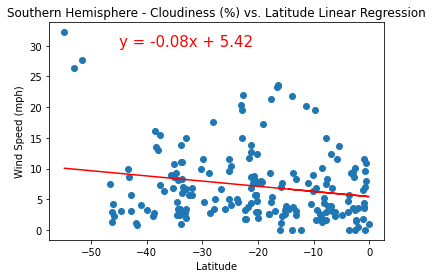

Entire Planet

As with cloudiness, wind speed distribution does not seem to correlate storngly with latitude.
South Only
It appears that the highest wind speeds seem to occur farther away from the equator.
Still, the vast majority of wind speeds seem to be fairly docile at less than 10 miles per hour.